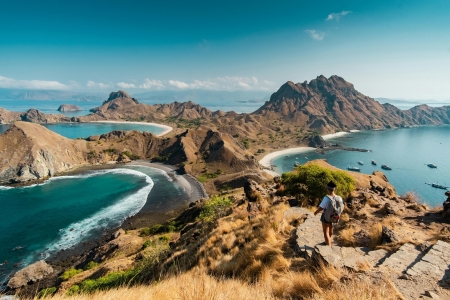
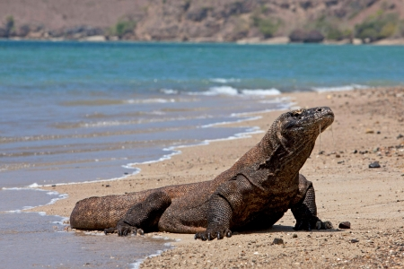
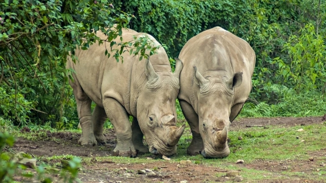
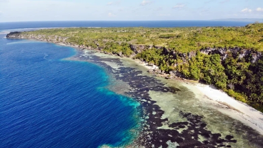
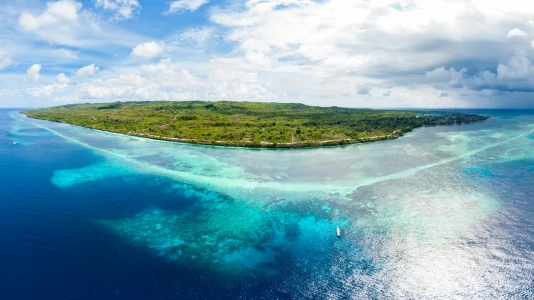
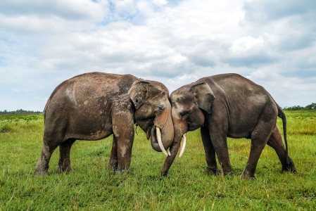

National Park
Indonesia is blessed with a vast network of national parks that protect the country’s natural treasures. These parks safeguard endangered species, preserve ancient forests, and maintain some of the most breathtaking landscapes in Southeast Asia. Whether you are drawn to mountains, wildlife, or marine scenery, each park offers something truly unique. The table below provides an overview of several major national parks across Indonesia.
| National Park | Province | What We Can See There |
|---|---|---|
| Komodo National Park | East Nusa Tenggara | Komodo dragons, pink beach, coral reefs |
| Ujung Kulon National Park | Banten | Javan rhinos, tropical rainforest, coastal scenery |
| Wakatobi National Park | Southeast Sulawesi | World-class coral reefs, marine biodiversity, clear waters |
| Way Kambas National Park | Lampung | Sumatran elephants, swamp forests, conservation center |






Next
References :
- National Parks Association. (n.d.). Komodo National Park. NationalParksAssociation.org.
- National Parks Association. (n.d.). Ujung Kulon National Park. NationalParksAssociation.org.
- National Parks Association. (n.d.). Wakatobi National Park. NationalParksAssociation.org.
- Ecolodges Indonesia. (n.d.). The magic of Way Kambas National Park. EcolodgesIndonesia.com.